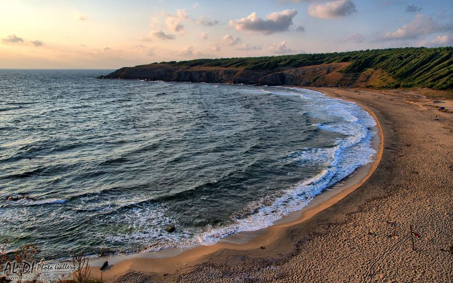

Плаж Липите.
Плаж Липите се намира край село Синеморец. Плажът се намира в красив, малък залив, запазил красотата и дивото в себе си.
Заобиколен е от красиви хълмове и гора, което го прави много привлекателно място.
До него се стига по пътечка започваща от южния край на плаж Бутамята. Има и път за автомобил.
